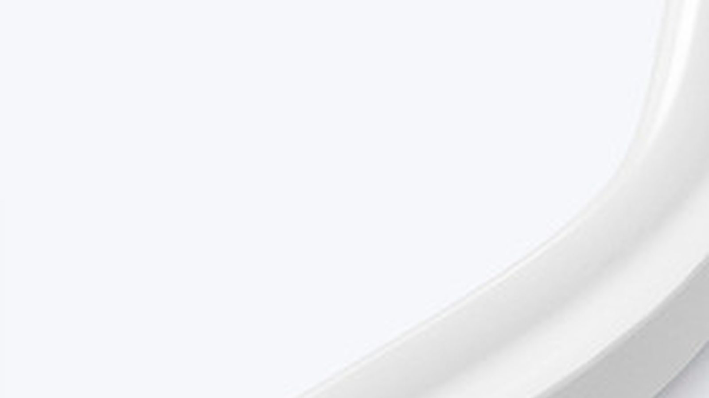

Proteção IP correta
IP65 ajuda contra respingos e poeira. IP67/IP68 deve ser avaliado quando há maior exposição à água.

Aplicação • Outdoor Lighting
Projetos externos exigem mais do que uma fita bonita: é preciso escolher grau de proteção, fonte adequada, vedação dos conectores e instalação protegida contra umidade. Para fachada e contorno visual, a fita Neon LED costuma ser a escolha mais forte; para linhas discretas em área coberta, COB IP65 pode funcionar bem.
SEO e intenção
Palavra-chave principal: fita de led para area externa. Variações usadas sem repetição excessiva: fita de led ip65, fita de led para fachada, fita de led externa, fita de led ip68, fita de led para piscina.
IP65 ajuda contra respingos e poeira. IP67/IP68 deve ser avaliado quando há maior exposição à água.
A fonte e as conexões precisam estar em caixa técnica adequada, não apenas a fita.
Neon LED cria linha aparente. COB IP65 cria linha mais discreta em perfil ou detalhe arquitetônico.
Produtos indicados
A lógica segue páginas fortes de aplicação: primeiro o ambiente, depois o problema técnico, depois o produto certo para cotação.


Guia de especificação
A intenção de busca por área externa mistura decoração, fachada, piscina e varandas. Para SEO, a página precisa explicar limites técnicos sem prometer uso indevido. A escolha depende do nível de exposição, da posição da fonte e do acabamento desejado. Em fachada comercial, pense também em manutenção e acesso futuro, porque trocar uma fita mal instalada custa mais do que especificar corretamente no início.
Subcenários
Esses blocos ajudam a cobrir buscas de cauda longa e dão caminhos claros para arquitetos, lojistas e compradores B2B.
Contornos e detalhes de marca com Neon LED.
Planejar este usoLuz indireta protegida contra umidade.
Planejar este usoLinhas decorativas em bancada, nicho e teto coberto.
Planejar este usoFAQ técnico
Respostas focadas em objeções reais de compra: cor da luz, proteção, fonte, perfil, instalação e manutenção.
Pode, desde que tenha proteção IP adequada e todos os acessórios também estejam protegidos.
IP65 resiste a respingos e jatos leves, mas não significa imersão. Para exposição severa, avalie IP67/IP68 e instalação correta.
Para linha visível e forte impacto visual, Neon LED é uma boa opção. Para luz indireta discreta, COB IP65 pode atender.
A fonte deve estar protegida conforme o ambiente e instalada em local ventilado e acessível.
Cotação B2B
Envie ambiente, metragem, tensão, temperatura de cor, proteção IP desejada e fotos da obra. A equipe pode indicar fita, perfil, fonte e acessórios compatíveis.